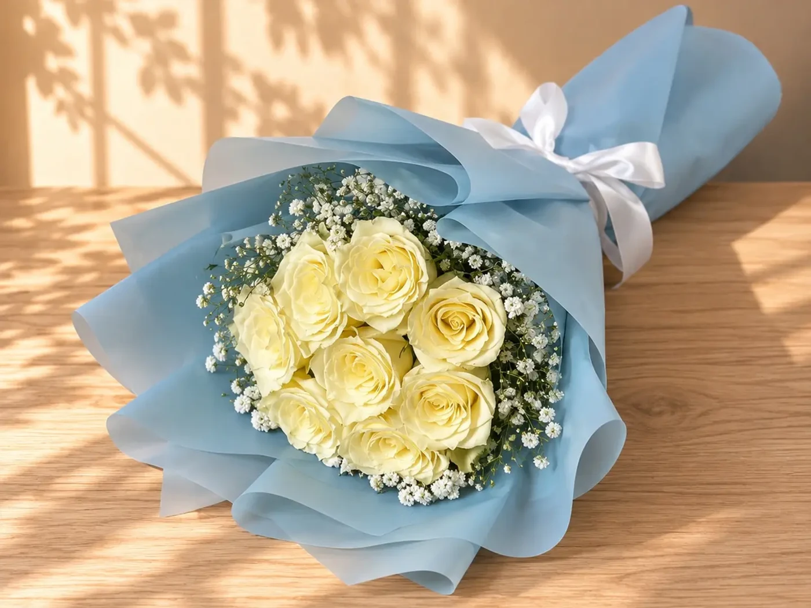

ذوق
باقات الورد

تنسيق منشور ضمن باقات الورد لدى وعود الورد. استخدم صورته مرجعًا عند الاستفسار، وحدّد الألوان أو الإضافات التي ترغب بها.
المسمى هنا وصف للتنسيق المعروض. قد تختلف الزهور والألوان والتغليف حسب الموسم والتوفر. لا توجد عملية شراء داخل المعاينة.